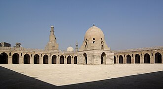

Überblick
La mosquée Ibn Touloun, au Caire en Égypte est la plus ancienne mosquée de cette ville qui soit dans son état originel et l'un des plus anciens monuments islamiques du pays. C'est aussi la plus vaste en termes de surface au sol. Elle se trouve non loin de la citadelle de Saladin et de la mosquée du sultan Hassan. Sa ziyada et son minaret en forme de spirale rappellent ceux de la grande mosquée de Samarra, édifiée quelques décennies auparavant.
مسجد ابن طولون أو مسجد أحمد بن طولون أو المسجد الطولوني هو أحد المساجد الأثريّة بالقاهرة. أمر ببنائه أحمد بن طولون مؤسس الدولة الطولونية سنة 263هـ/877م بمدينته الجديدة القطائع ليصبح ثالث مسجد جامع بني في عاصمة مصر الإسلامية بعد جامع عمرو بن العاص الذي بني في الفسطاط، وجامع العسكر الذي بني في مدينة العسكر ورغم أن مسجد عمرو بن العاص لا يزال موجودًا إلا أن المسجد الطولوني يعد أقدم مساجد مصر القائمة حتى الآن لاحتفاظه بحالته الأصلية بالمقارنة مع مسجد عمرو بن العاص الذي توالت عليه الإصلاحات التي غيرت معالمه.
The Mosque of Ibn Tulun is a mosque in Islamic Cairo, Egypt. Built between 876 and 879 CE by its namesake, Ahmad ibn Tulun, it is the oldest well-preserved mosque in Egypt. Its design was inspired by the 9th-century mosques of Samarra in Iraq, the Abbasid capital at the time, making it an important representative of classical Abbasid architecture. It is one of the most significant monuments of Islamic architecture in Egypt.
Tolunoğlu Camii Mısır'ın Kahire kentinde bulunan eski bir cami. Tolunoğulları devletinin kurucusu Türk kökenli devlet adamı Ahmed bin Tolun tarafından 879 yılında yaptırılmıştır. Malviye Tipi minaresinin caminin yapısıyla tam uyuşmaması minarenin daha sonra inşa edildiği düşündürmektedir. Memlük sultanı Laçın el-Mansuri döneminde ana yapıya eklenmiş olması muhtemeldir.
Masjid Ibnu Tulun atau Masjid al-Maydan adalah masjid yang berada di kota Kairo Mesir. Masjid Ibnu Tulun dibangun pada tahun 876-879 pada masa pemerintahan Ahmad Ibn Tulun, penguasa Mesir pertama dari dinasti Ibnu Tulun yang berkuasa di Mesir selama 135 tahun. Masjid yang sudah berumur ratusan tahun tetapi cukup terawat baik ini menjadi salah satu peninggalan masa kejayaah Islam di Mesir. Masjid ini juga menjadi masjid tertua kedua di Mesir setelah Masjid Amr Bin Ash.
ابن طولون یا احمد ابن طولون مسجد، مصر کے شہر قاہرہ میں ہے۔ یہ اصل حالت میں اب تک محفوظ رہنے والی، اس شہر کی قدیم ترین مسجد ہے۔ اور بلحاظ رقبہ قاہرہ کی سب سے بڑی مسجد ہے۔
Die Ibn-Tulun-Moschee ist die flächengrößte Moschee Kairos und gilt als älteste in ihrer ursprünglichen Form erhaltene Moschee der Stadt. Die noch ältere Amr-Moschee wurde deutlich umgebaut.
La mezquita de Aḥmad ibn Ṭūlūn se encuentra en El Cairo (Egipto). Se puede decir que es la mezquita más antigua de la ciudad que ha sobrevivido en su forma original, y que es la mayor mezquita de El Cairo en extensión. Construida en el siglo IX, tiene una gran influencia de las mezquitas de Samarra en Irak, la capital del Califato abasí en este momento, por lo que es un ejemplo relevante de la arquitectura abasí clásica.
La moschea di Ahmad ibn Tulun , è la moschea più grande del Cairo, la più antica dell'Africa e l'unico edificio sopravvissuto dell'antica capitale al-Qata'i'. La moschea è costruita in stile Samarra tipico degli abbasidi ed è stata restaurata molte volte nel tempo, tra cui i restauri del 1077 da Badr al-Jamali e quelli del 1296 voluti dal sultano Lajin. Adiacente ad una delle pareti della moschea, si trova il museo Gayer-Anderson.
De Ibn Toeloenmoskee is de qua oppervlakte grootste moskee van de stad Caïro, en geldt als de oudste nog in zijn oorspronkelijke vorm in deze stad aanwezige moskee. De moskee van Hakim-amr-Allah is ouder, maar is uitgebreid verbouwd.
伊本·图伦清真寺是埃及的伊斯兰教清真寺。是伊斯兰早期建筑的代表之作。位于开罗旧城南亚什卡尔山的高地上。建于876～879年间。为当时占据埃及的突伦王朝的艾哈迈德·伊本·突伦所建。作为一座历史悠久的古寺，曾多次塌毁，经历代王朝的不断修复，形成现在这个样子。是一座碉堡形的建筑，它的宣礼塔位于清真寺北面，是埃及唯一有外螺旋梯的宣礼塔。
イブン・トゥールーン・モスク は、エジプトの首都であるカイロにあるモスク。トゥールーン朝の創始者であるアフマド・イブン・トゥールーンによって建設され、879年に完成した。
이븐 툴룬의 모스크(아랍어: مسجد أحمد بن طولون)는 이집트의 수도 카이로에 위치한 사원이다. 카이로에서 현존하는 모스크 중 가장 오래된 사원이다.
Мече́ть Ибн Тулу́на расположена в Каире, столице Египта. Возможно, это самая старая мечеть Фустата, сохранившая свой первоначальный облик, восходящий к середине IX века.
Ibn Tulun-moskén ligger i stadsdelen El-Sayeda Zeinab i centrala Kairo, Egypten. Den uppfördes av Ahmad ibn Tulun, färdigställdes år 879 och anses vara den äldsta moskén i Kairo i sin ursprungliga form. Den är den till ytan största moskén i staden och bland de största i världen.
Moscheea lui Ibn Tulun este una dintre cele mai vechi și mai mari moschei din Cairo, Egipt. Construită între 876 și 879 d.Hr. de Ahmad ibn Tulun, fondatorul dinastiei Tulunide, moscheea este un exemplu magnific de arhitectură islamică timpurie și rămâne o mărturie a influențelor culturale și religioase din perioada sa.
Auf der Karte
Dokumente und Links
- Wikipédia — Français
- Wikipédia — العربية
- Wikipédia — English
- Wikipédia — Türkçe
- Wikipédia — Bahasa Indonesia
- Wikipédia — اردو
- Wikipédia — Deutsch
- Wikipédia — Español
- Wikipédia — Italiano
- Wikipédia — Nederlands
- Wikipédia — 中文
- Wikipédia — 日本語
- Wikipédia — 한국어
- Wikipédia — Русский
- Wikipédia — Svenska
- Wikipédia — Română
- Wikidata — Q915413
Daten: Wikidata (CC0), alle 3 Monate aktualisiert. Das Jahr ist das älteste bekannte Baudatum des Gebäudes: Bei einem Bauwerk, das erst später zur Moschee wurde (wie die Hagia Sophia), ist es das des ursprünglichen Gebäudes. Fotos: Wikimedia Commons, Urheber und Lizenz auf der Seite jedes Fotos.